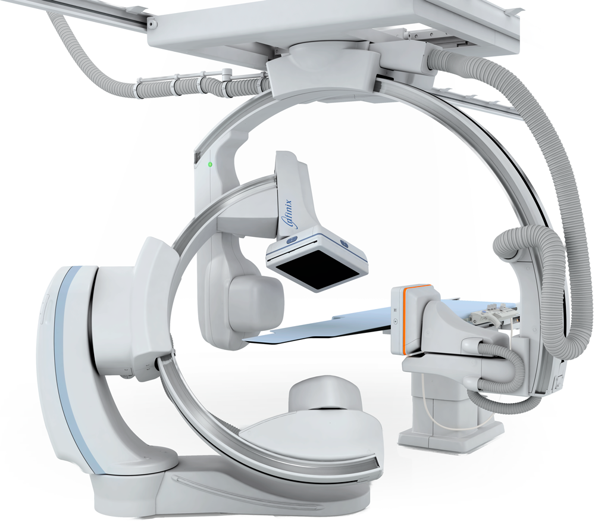

Combinando a flexibilidade excepcional de uma combinação de braço C montada no chão e no teto, o sistema biplano é a escolha ideal para procedimentos intervencionistas e diagnósticos vasculares e neuro.
O braço C Infinix-i foi projetado para mover-se ao redor de você e de seu paciente, de forma que os procedimentos possam ser realizados com mais conforto, segurança e eficiência.
